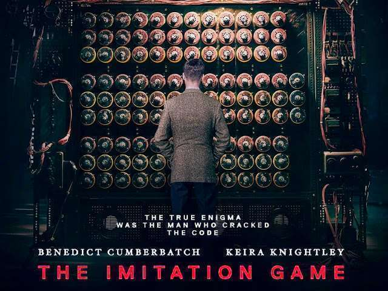

O filme "O Jogo da Imitação" (The Imitation Game), dirigido por Morten Tyldum e lançado em 2014, é uma obra que recebeu aclamação da crítica e do público por sua narrativa cativante e atuações impressionantes. No entanto, por trás do brilho do filme, encontramos questões críticas que merecem ser discutidas, principalmente em relação à simplificação histórica e à representação de seu protagonista, Alan Turing.
O enredo do filme gira em torno da vida de Alan Turing, um matemático britânico excepcional que desempenhou um papel vital na quebra do código Enigma, uma máquina de criptografia utilizada pelos nazistas durante a Segunda Guerra Mundial. O filme é protagonizado brilhantemente por Benedict Cumberbatch, que retrata Turing como um gênio excêntrico, mas ao mesmo tempo isolado e incompreendido.
Uma das principais críticas a "O Jogo da Imitação" diz respeito à simplificação histórica que permeia a narrativa. Embora a história de Turing e sua contribuição para o esforço de guerra sejam essenciais, o filme toma liberdades artísticas que distorcem alguns eventos e personagens históricos. A representação simplificada da quebra do código Enigma, por exemplo, minimiza o papel de outros membros da equipe de Bletchley Park, que também desempenharam funções cruciais na realização desse feito notável.
A caracterização de Alan Turing, embora brilhantemente interpretada por Cumberbatch, também é alvo de críticas. O filme o retrata como uma figura quase caricatural, focando principalmente em suas dificuldades sociais e na sua natureza excêntrica. Essa abordagem tende a reduzir a complexidade da personalidade de Turing, deixando de lado sua genialidade multifacetada e suas contribuições científicas revolucionárias.
Outro ponto a ser considerado é a abordagem convencional da narrativa do filme. "O Jogo da Imitação" segue uma estrutura típica de filme biográfico, o que pode torná-lo previsível para alguns espectadores. A história avança de maneira linear, e a ênfase recai frequentemente nos conflitos pessoais de Turing, em detrimento de uma exploração mais aprofundada de seu trabalho e suas ideias inovadoras.
Apesar dessas críticas, é importante destacar os aspectos positivos de "O Jogo da Imitação". O filme trouxe à tona uma parte importante da história da Segunda Guerra Mundial e do desenvolvimento da computação, apresentando-a a um público mais amplo. Além disso, a representação da perseguição de Turing devido à sua orientação sexual é uma parte essencial do filme, pois chama a atenção para as injustiças que ele enfrentou.
Em conclusão, "O Jogo da Imitação" é um filme que, embora tenha recebido elogios significativos por suas atuações e sensibilidade ao retratar a perseguição de Turing, não escapa de críticas relacionadas à simplificação histórica e à abordagem convencional de sua narrativa. Ainda assim, o filme serve como uma introdução importante ao trabalho e à vida de Alan Turing, estimulando discussões sobre sua genialidade e as complexidades de sua personalidade. É uma obra que, apesar de suas imperfeições, deixa uma marca duradoura na representação cinematográfica de figuras históricas e científicas notáveis.